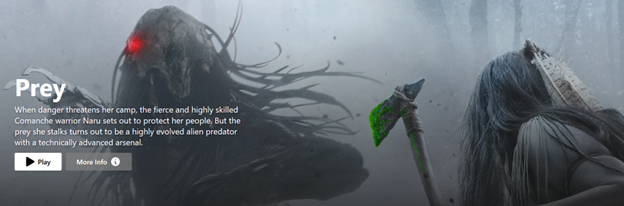

The movie database API is an automatically updating and ever-changing documentation list that allows information from select films to be displayed in any way the end user intends. To understand exactly how to use this API, we must first understand what exactly an API is and how to integrate it within a project. API stands for Application Programming Interface, and it creates a way in which information can be passed between applications. In this particular case, the API is a database which stores information about an entire list of movies in a handy (JSON) format (back end). This information can then be parsed and sent to the front end and edited as the developer sees fit.
• Text Editor
• Knowledge of object oriented programming (specifically JavaScript)
• Modern browser (The purpose of the browser is to easily inspect the JSON of a
given element when it is displayed in the UI)
• API Key (The unique API key allows you to gain access to the database so that you can make your
own changes)
Obtaining a unique API key is as simple as searching “movie database api” in your browser and finding any site that will allow you to copy a key. In most cases, you will have to agree to terms of use. The key should be a sequence of numbers and letters and look similar to this:
1e28f4c216d1d39ebe3ae68a7xc654f5
Once you have copied your key, you will need to insert it into your editor
of choice so that it can be used by other parts of your application. The
easiest way to do this is to store it in a variable in a .env file that
can be reused throughout the project. To do this, simply create a file with
extension env somewhere in your tree and create a variable with a semantic
name that is easy to remember. When you are done, it should look similar
to this:
NEXT_PUBLIC_API_KEY=1e28f4c216d1d39ebe3ae68a7xc654f5
This API key is useful because it makes it so that a developer can have dynamic information relayed to the front-end application. In turn, this limits static content and permits scalability whenever the developer wants to update or add to the project.
For my use case, I will be translating information from my env file to my front-end Typescript project:
This snippet displays variables from the JSON being used in order to develop the user interface. This is where your browser will come in handy, as it will let you peek into the console and see exactly what parameters are included. To see this, right click in your browser and click inspect; alternatively, hit Ctrl+Shift+I, or F12 on your keyboard. Then, navigate to the console and you should see it packaged within a neatly wrapped object. Below is some data in object notation format for the movie “Prey”.
As you can see, this object holds vital information regarding a given movie. These can even be customized within the database to display other criteria, such as but not limited to: genre, tv or movie, and subtitle language.
Using the following information:
backdrop path:
the result is,
The page can even be reloaded to show a different, random movie, while the code stays consistent. In other words, we can create a beautiful and dynamic changing UI that doesn’t need to be constantly updated by the developer to remain relevant.
When used correctly, backend API knowledge can significantly streamline the development process and make way for more complex configurations and implementation into your user interface.